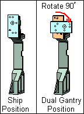
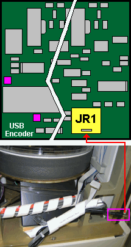
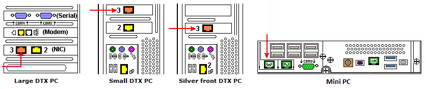
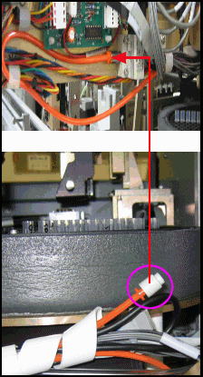

Installing Dual-Gantry Sample Pipettor for Integrated System
This procedure describes how to install a dual-gantry sample pipettor when the instrument is ordered as an integrated system but a sample pipettor is not installed.
New instruments ordered for integrated systems after May 2009 can be shipped without a sample pipettor installed. These instruments arrive with the dual-gantry sample pipettor secured in a box inside the instrument crate.
Rotate the mounting bracket on the rear universal tower to the dual-gantry configuration, and secure the bracket.
Note:
Only one screw secures the mounting bracket to the rear universal tower in the dual-gantry configuration.
The mounting bracket is not shipped in the dual-gantry configuration because it extends outside of the instrument and could be damaged during shipping.

Attach the dual gantry sample pipettor to the universal towers.
Remove the screws on the tower mounting brackets that will be used to secure the gantry to the towers.
Insert the dual gantry sample pipettor into the instrument from the rear and attach it to the towers. Use the locating pins on the towers to mount the dual gantry sample pipettor.
Caution:
Do not lift the dual gantry sample pipettor by the spline shafts. Doing so caused the shafts to bend and restricts movement and cause motion errors.
Use caution when installing the gantry so the sample probe is not damaged.
Verify that cables are not pinched between the towers and the gantry.
Secure the gantry to the towers using the two 1/4-20 x 1 inch (25.4 mm) screws for each tower (four total) that were removed from the mounting plates.
Uncoil the sample pipettor tubing from the gantry, route it through the tubing clamps under the upper left card cage, below the bracket securing the bulk feeder, and connect it to the union fitting for the sample pipettor.
Note: Verify that the tubing is not kinked and does not interfere with sample pipettor movement.
Reconnect these connectors to the Sample Pipettor Interface PCB:
J1 - Ribbon Cable
J3 - Power Harness
Remove the cable-ties securing the dual gantry pick-and-place and sample pipettor. Remove the paper warning tag attached to the spline shafts.
Move the sample pipettor and pick-and-place back and forth along the length of the gantry to verify smooth, unrestricted motion.
Connect the cables and tubing.
Connect a network cable from the port labeled UCTA on the DxI instrument to the DxC network hub.
Note: DxI 800 instruments with serial numbers 601433 and above and DxI 600 instruments with serial numbers 900097 and above have two network ports on the back of the instrument. The PC port is for connecting the console PC to the AU. The UCTA port is for connecting the DxI AU to the DxC network hub and is used only in integrated configurations.
Connect the USB cable located behind the sample storage module to JR1 on the USB Encoder I/F PCB attached to the dual-gantry sample pipettor.
Note: The other end of the USB cable is connected to the CPU PCB in manufacturing.

Connect the harness located behind the sample storage module to J2 (labeled CTA Motor) on the dual-gantry pick-and-place interface PCB. Connect the ribbon cable to J1 (labeled CTA I/O) dual-gantry pick-and-place interface PCB.
Note: The other end of the power harness was connected to the MCC backplane PCB in manufacturing.
Connect the network cable to the PC.

Connect a network cable to port 3 on the NIC card of the DxI PC.
Connect the other end of the cable to an open port on the DxC network hub.
Connect the pneumatics tubing.

Remove the plug from the pneumatics tubing located behind the sample storage module.
Attach the tubing to the pneumatics valve on the dual-gantry sample pipettor.
If this is NOT the INITIAL installation of the dual-gantry sample pipettor, perform the alignments to all intersecting devices now.